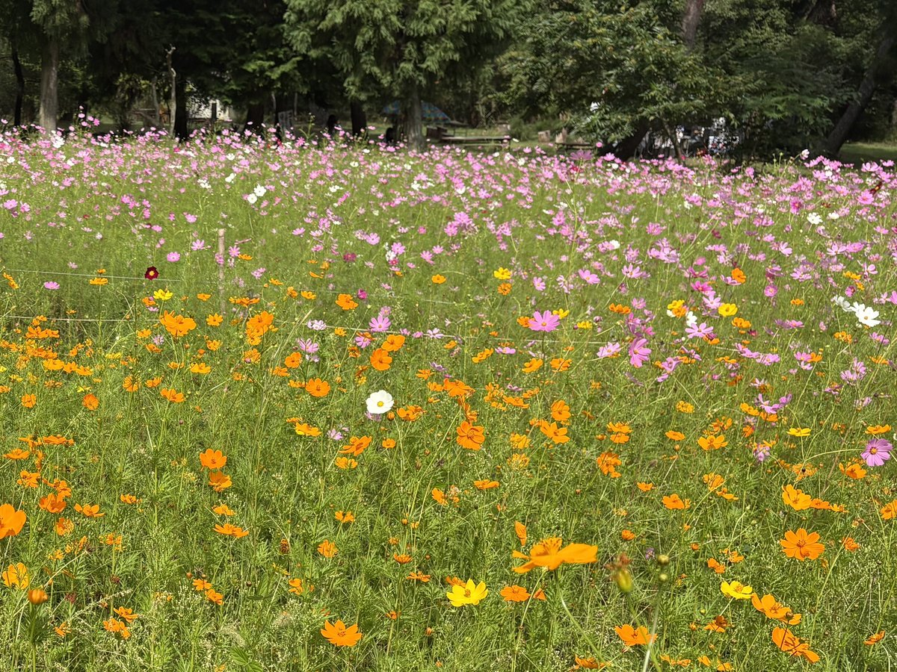

とよのコスモスの里
大阪府豊能郡豊能町牧下林2
駐車場
あり（無料）
トイレ
あり
ドッグラン
なし
入場料
有料（大人500円・小中学生300円・犬は無料）
掲載時点の料金です。最新の料金は公式サイトでご確認ください。
備考・犬連れでのポイント
妙見山の山麓に広がる約1haの畑に約100万本のコスモスが咲く、地元の花の愛好家が30年余り育ててきた期間限定のコスモス園。
開園は例年9月中旬〜10月下旬で見頃は9月下旬〜10月上旬、9:00〜17:00。
入園料は大人500円・小中学生300円。町の公式ページにペットの記載は無いが、園の公式Instagramがプロフィールに「#ペット入園可」と明記しており、リード着用・排泄物持ち帰りを条件に犬同伴OKとの訪問報告も複数ある。
犬の入園料は公式に記載が無いが、2026年9月の訪問時に受付の係の人に確かめたところ、入園料がかかるのは人間のみで犬は無料だった。
駐車場は100台以上で入園者は無料（入園しない場合は駐車料金500円と現地の看板に表示）だが、国道423号から園までの道が細く、駐車場周辺も道幅が狭いため運転注意。
トイレは公式の案内に記載が無いが、2026年9月の訪問時は受付近くに手洗い付きのトイレ小屋があり、園内の掲示にもトイレの利用マナーが書かれていた。
園内には芝生の休憩スペースやベンチがあり、野菜や軽食の売店が出る場合あり。
山あいで市街地より気温が低く、バスは本数が少ないため車利用が現実的。
入口や園内に案山子が置かれており、驚く犬もいるので注意。入園料・営業時間・開園期間は公式Instagramのプロフィールに掲げられており、その年の開園状況や開花状況もほぼ毎日発信されるので事前確認のこと。
公式Instagramのハイライトに「国道からの道順」「入口案内」があり、道が細いので出発前に見ておくとよい。